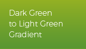
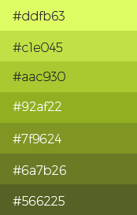

Versiunea 1.0
Acesta este ghidul Stilului Vizual al QGIS. Acest document definește standardele pentru utilizarea identității noastre vizuale. Documentul propune o modernizare a mărcii QGIS, pentru a o face mai puternică, mai vizibilă și mai potrivită unei game largi de cazuri de utilizare.
Ghidul Stilului Vizual este un document dinamic, menirea acestuia fiind de a dezvolta un mesaj și o imagine adecvate aplicației QGIS. Este un document “dinamic”, întrucât ne așteptăm ca acesta să acopere, în timp, majoritatea cazurilor de utilizare în care consistența vizuală este importantă și poate fi descrisă cu ajutorul unor reguli simple. Standardele și politicile descrise aici sunt destinate menținerii uniformității prezentării, lucru necesar promovării cu succes, și eforturilor de marketing din cadrul proiectului QGIS.
Identitatea noastră vizuală simbolizează punctele forte ale aplicației QGIS, competența și promisiunea calității. Tratarea adecvată a logo-ului, a fonturilor și a culorilor asigură că simbolul QGIS va fi recunoscut și va ieși în evidență indiferent de gradul de dezordine al comunicării. Standardele grafice reprezintă o expresie vizuală a QGIS, ele trebuind să servească drept bază pentru întreaga noastră strategie de comunicare.
Această primă versiune a Ghidului de Stil Grafic prezintă principalele elemente ale noului logo QGIS. Versiunile viitoare se vor concentra asupra activităților de promovare a mărcii QGIS pe web, dispozitive mobile și pe materialele tipărite.
Logotip
Original


Descărcați fișierele logo-ului
SVG logo
PNG logo
SVG monochrome logo
PNG monochrome logo
Aici este prezentat noul logo QGIS. Păstrând elementele de bază ale siglei QGIS originale (litera Q cu o săgeată trecând prin ea), această nouă versiune intenționează să fie clară și scalabilă, având forme mai simple și mai îndrăznețe.
Modificările propuse sunt enumerate mai jos.
- Spiritul existent este păstrat, însă logo-ul este mai bine conturat
- Au fost eliminate umbrele
- Litera Q este sans-serif
- Săgeata devine parte din litera Q
- Textul siglei QGIS se bazează pe fontul gratuit Trueno Bold.
Culoare
Culori primare
Verde Închis

HEX: #589632
RGB: 88, 150, 50
CMYK: 70.53, 18.84, 100, 3.7
Culoarea verde închis din QGIS se va utiliza pentru fiecare element de logo din versiunea monocromă. Se poate folosi și pentru fundal, titlul principal sau text.
Verde Deschis

HEX: #93b023
RGB: 147, 176, 35
CMYK: 50.62, 12.6, 100, 0.86
Culoarea verde deschis din QGIS se va utiliza pentru conținutul mai puțin important. Se poate folosi pentru un al doilea fundal, text sau pentru legături.
Gradientul

Cele două culori primare sunt folosite ca și gradient vertical liniar în logo, gradientul putând servi ca și fundal pentru paginile web sau materialele tipărite
Paleta de Culori


Culori secundare
Galben pal

HEX: #f0e64a
RGB: 240, 230, 74
CMYK: 11, 0, 79, 0
Portocaliu

HEX: #ee7913
RGB: 238, 121, 19
CMYK: 0, 62, 96, 0
Culorile Galben pal și Portocaliu din QGIS vor fi folosite pentru accentuări și la apelarea acțiunilor
Paleta de Culori


{kind=link}
{kind=link}
{kind=link}
{kind=link}
{kind=link}
{kind=link}
{kind=link}
{kind=link}
{kind=link}
{kind=link}
{kind=link}
{kind=link}
{kind=link}
{kind=link}
{kind=link}
{kind=link}
{kind=link}
{kind=link}
{kind=link}
{kind=link}
{kind=link}
{kind=link}
{kind=link}
{kind=link}
{kind=link}
{kind=link}
{kind=link}
{kind=link}